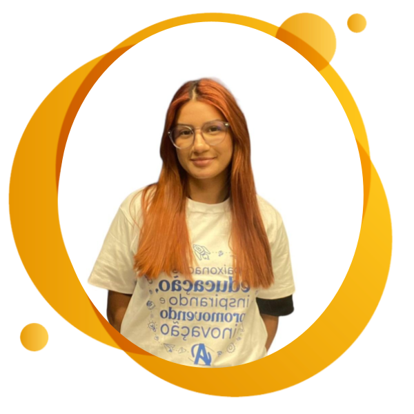

Endereço: Natal/RN
Telefone: 84-98822-2488
Email: naralicecosta04@gmail.com
Linkedin: Naralice Costa
Github: Naralice Costa
Análise e Desenvolvimento de Sistemas
tecnólogo-UNP
Status: cursando
Cargo: Estágio Desenvolvimento
Principal atividade: Desenvolver interfaces que encantem os usuários e que os possibilitem
usar tudo o que o sistema tem a oferecer
Desenvolver API´s otimizadas que possibilitem criar a melhor experiencia de operação no sistema
Cargo: Estágio Testes e Controle de Qualidade
Principal atividade: Dinfundir e aplicar boas práticas em toda etapa do desenvolvimento de um software
Análisar e levantar todos os requisitos levantados por clientes
Executar testes manuais para garantir a entrega de um melhor produto
Cargo: Estágio suporte e atendimento de TI
Principal atividade: Prestou suporte a universidades através de ferramentas como Ajuda e Redmine